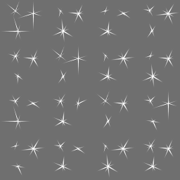

Image Recognition
This example shows how to recognize images in the viewfinder and overlay it with images. Furthermore it shows how to recognize multiple different images and how to react on user clicks on the overlaid elements.
For a better understanding, here are some terms that will be used in the following and other section of this documentation related to vision-based augmented reality.
Target: A target image and its associated extracted data that is used by the tracker to recognize an image.
Target collection: An archive storing a collection of targets that can be recognized by the tracker. A target collection can hold up to 1000 targets.
Tracker: The tracker analyzes the live camera image and detects the targets stored in its associated target collection. Multiple trackers can be created, however only one tracker can be active for recognition at any given time.
This sample consists of five parts
Image on Target (1/4)
With these terms in mind let's start by defining what actually should be recognized (target) and create a corresponding target collection that the tracker can use. In this case, the target collection includes the following single magazine page.
To view the sample you can use the image in this PDF on page 2
See Target Management for instructions how to create target collections which can be used in the Wikitude SDK.
This is the same process for every use of image recognition in ARchitect. You'll first need to define your targets and then create a target collection for it. Now let us have a look at the JavaScript for enabling image recognition.
// Initialize Tracker
// Important: If you replace the tracker file with your own, make sure to change the target name accordingly.
// Use a specific target name to match only a certain target or use a wildcard to match any or a certain group of targets.
this.tracker = new AR.Tracker("assets/magazine.wtc", {
onLoaded: this.worldLoaded
});
// Create overlay for page one
var imgOne = new AR.ImageResource("assets/imageOne.png");
var overlayOne = new AR.ImageDrawable(imgOne, 1, {
offsetX: -0.15,
offsetY: 0
});
var pageOne = new AR.Trackable2DObject(this.tracker, "*", {
drawables: {
cam: overlayOne
}
});First an AR.Tracker needs to be created in order to start the recognition engine. It is initialized with a URL specific to the target collection. Optional parameters are passed as object in the last argument. In this case a callback function for the onLoaded trigger is set. Once the tracker is fully loaded the function worldLoaded() is called.
The next step is to create the augmentation. In this example an image resource is created and passed to the AR.ImageDrawable. A drawable is a visual component that can be connected to an target image AR.Trackable2DObject or a geolocated object AR.GeoObject. The AR.ImageDrawable is initialized by the image and its size. Optional parameters allow for position it relative to the recognized target.
The last line combines everything by creating an AR.Trackable2DObject with the previously created tracker, the name of the image target and the drawable that should augment the recognized image.
Please note that in this case the target name is a wildcard *. Wildcards can be used to match any target defined in the target collection. If you want to match specific targets only for a particular AR.Trackable2DObject simply provide the target name as specified in the target collection.
- Upload your images to the target management tool (log-in required)
- Generate your target collection file (.wtc)
- In your code create an
AR.Trackerand load the target collection file from the previous step - Create an AR.Trackable2DObject and assign your targetName
Make sure that the
targetName used with the AR.Trackable2DObject correspond to one of the target names in your target collection. You can also use a wildcard to match any target or only a specific subset of targets. Please refer to the AR.Trackable2DObject main documentation for more information about wildcards.
Multiple Targets (2/4)
Adding multiple targets to a target collection is straightforward. Simply follow the guide at Target Management. Each target in the target collection is identified by its target name. By using this target name, it is possible to create an AR.Trackable2DObject for every target in the target collection.
To view the sample you can use the image in this PDF on page 3

// Create overlay for page two
var imgTwo = new AR.ImageResource("assets/imageTwo.png");
var overlayTwo = new AR.ImageDrawable(imgTwo, 0.5, {
offsetX: 0.12,
offsetY: -0.01
});
var pageTwo = new AR.Trackable2DObject(this.tracker, "pageTwo", {
drawables: {
cam: overlayTwo
}
});Similar to the first part, the image resource and the AR.ImageDrawable for the second overlay are created. The AR.Trackable2DObject for the second page uses the same tracker but with a different target name.
Interactivity (3/4)
The final step is to add interactivity to the image target. For this example a button is added to each target that opens a webpage.
The button is created similar to the overlay feature. An AR.ImageResource defines the look of the button and is reused for both buttons.
this.imgButton = new AR.ImageResource("assets/wwwButton.png");For each target an AR.ImageDrawable for the button is created by utilizing the helper function createWwwButton(url, options). The returned drawable is then added to the drawables.cam array on creation of the AR.Trackable2DObject.
var pageOneButton = this.createWwwButton("http://www.wikitude.com/pageone", 0.1, {
offsetX: -0.25,
offsetY: -0.25
});
var pageOne = new AR.Trackable2DObject(this.tracker, "pageOne", {
drawables: {
cam: [overlayOne, pageOneButton]
}
});As the button should be clickable the onClick trigger is defined in the options passed to the AR.ImageDrawable. In general each drawable can be made clickable by defining its onClick trigger.
createWwwButton: function createWwwButtonFn(url, size, options) {
options.onClick = function() {
AR.context.openInBrowser(url);
};
return new AR.ImageDrawable(this.imgButton, size, options);
},The function assigned to the click trigger calls AR.context.openInBrowser with the specified URL, which opens the URL in the browser.
Adding HTML content (4/4)
Using an AR.HtmlDrawable it is possible to display HTML content inside the AR scene, the same way images are displayed. In this example a weather widget is added on top of the image target to present the real-time weather in Maui, Hawaii.
In general any HTML content can be loaded by passing a relative or absolute URL. Additionally HTML content can also be passed as a string; please see the API reference for more details on how to specify the content when creating the drawable. This example uses a relative URL to the weather widget that is stored as .html file in the example's assets subfolder.
Once the content has been chosen it is important to think about the viewport the content will need in order to be laid out correctly. The viewport is the area that is available to the HTML content when it is rendered. It is independent of the actual area the AR.HtmlDrawable will need on screen when placed in the AR scene.
The viewport width and height needs to be set when constructing the AR.HtmlDrawable and should also be set as meta tag inside the HTML content that is used. This tells the HTML rendering engine to use the specified viewport size during rendering.
<meta name="viewport"
content="target-densitydpi=device-dpi, width = 320, user-scalable = 0">Make sure that the value of width is set according to the size (in pixel) the HTML content needs. It should also correspond to the viewportWidth value specified during the creation of the AR.HtmlDrawable.
Similar to viewportWidth the viewportHeight is specified to define the available pixel height during rendering of the content. If you are unsure of the pixel size of the HTML content at hand, you can use the developer tools built into modern browsers (e.g. WebInspector) to take measure.
In the code example below we are putting that all together to a working AR.HtmlDrawable. The created drawable is added to the list of AR.Trackable2DObject drawables just like any other drawable.
var weatherWidget = new AR.HtmlDrawable({
uri: "assets/weather.html"
}, 0.25, {
viewportWidth: 320,
viewportHeight: 100,
backgroundColor: "#FFFFFF",
offsetX: +0.36,
offsetY: 0.5,
horizontalAnchor: AR.CONST.HORIZONTAL_ANCHOR.RIGHT,
verticalAnchor: AR.CONST.VERTICAL_ANCHOR.TOP,
clickThroughEnabled: true,
allowDocumentLocationChanges: false,
onDocumentLocationChanged: function onDocumentLocationChangedFn(uri) {
AR.context.openInBrowser(uri);
}
});
var pageOne = new AR.Trackable2DObject(this.tracker, "pageOne", {
drawables: {
cam: [overlayOne, pageOneButton, weatherWidget, sparkles]
}
});Interaction with an AR.HtmlDrawable is controlled with the clickThroughEnabled and allowDocumentLocationChanges properties. Setting clickThroughEnabled will forward click events to the HTML content making it possible to follow links or click buttons. If the content of the HTML drawable should not change allowDocumentLocationChanges can be set to false so links are not followed. It is still possible to react on clicked links by using the onDocumentLocationChanged trigger. The example uses this trigger to open clicked links fullscreen in a browser. The result then looks like this
Bonus: Sparkles
This section adds a little bonus to the above example. Sprite sheet animations can be used to animate images similar to animated GIFs and are used in this example to add sparkles to the overlay.
A sprite sheet is an image file that contains all key frame images required for the animation. The key frame image size (width and height) is passed at creation time and must be equal for all key frame images. Key frame images will be managed in an array, starting with entry 0. The key frame image array will be filled from left to right, row by row. Any partly filled key frames at the edge of the sprites sheet will be ignored.

First the image resource is created which is used for creating the AR.AnimatedImageDrawable. Since the width/height of the sprite sheet is 512 and it carries 16 key frames, the width and height of a single image is 128. So we set 128 as the width and height of the AR.AnimatedImageDrawable.
// Sparkles
var imgSparkles = new AR.ImageResource("assets/imageSparkles.png");
var sparkles = new AR.AnimatedImageDrawable(imgSparkles, 0.25, 128, 128, {
offsetX: -0.2,
offsetY: 0.5,
rotation: 75
});To start the animation the order of the keyframes needs to be passed as array. Additionally the time each frame is displayed in ms and the loop count needs to be defined. In this case each image is displayed 100ms before it changes and a loop count of -1 plays the animation in an infinite loop.
sparkles.animate([0, 1, 2, 3, 4, 5, 6, 7, 8, 9, 10, 11, 12, 13, 14, 15], 100, -1);The last step is to add it as drawable to the AR.Trackable2DObject so it will be overlaid on the first page.
var pageOne = new AR.Trackable2DObject(this.tracker, "pageOne", {
drawables: {
cam: [overlayOne, pageOneButton, weatherWidget, sparkles]
}
});